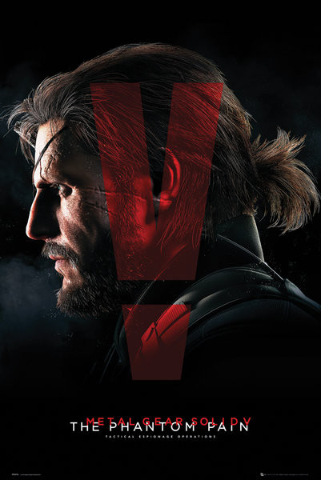

1984. Un hombre despierta en un hospital de Chipre tras 9 años en coma. Ese hombre se cree Big Boss, pero su identidad —y la tuya— serán cuestionadas profundamente antes del final.
Junto a Ocelot y Miller, Big Boss reconstruye Diamond Dogs, su nueva fuerza mercenaria con una renovada Mother Base offshore. Su objetivo: dar caza a Skull Face, líder de XOF, que ha desarrollado los vocal cord parasites, armas biológicas diseñadas para exterminar etnias a través del idioma.
A lo largo de dos capítulos en Afganistán y África, Snake recluta, investiga y desvela una verdad que toca la identidad del soldado, la memoria, el dolor fantasma y el destino de Venom Snake.
El protagonista. Su identidad es el mayor giro narrativo de todo el juego y de la franquicia.
Antagonista desfigurado por quemaduras, cuyo odio tiene raíces históricas y personales profundas.
Sobreviviente amputado del ataque a Mother Base. Su rabia impulsa a Diamond Dogs hacia la venganza.
Consejero de campo de Snake. Su lealtad aquí es a Big Boss — el real.
Francotiradora muda con habilidades sobrehumanas. Una de las compañeras más icónicas del juego.
Lobo adoptado por Snake en la infancia. Compañero de campo que detecta enemigos y objetos.
Experto en los parásitos vocales. Clave para resolver la amenaza biológica de Skull Face.
Niño soldado con rabia contra Big Boss. Reconocible como el futuro Liquid Snake.
The Phantom Pain representa el pico absoluto de las mecánicas de sigilo de la saga en un entorno de mundo abierto.
Dos mapas enormes (Afganistán y Zaire/Angola) con misiones principales y secundarias en un diseño sandbox.
Gestión profunda de plataformas, personal, investigación y desarrollo de armas e equipo.
Casi cualquier cosa puede ser extraída con el Fulton: soldados, materiales, vehículos, animales...
Quiet, D-Dog, Pequod (piloto), D-Walker (walking mech). Cada compañero tiene utilidades distintas.
Los enemigos aprenden las tácticas del jugador: si usas mucho el sigilo, usan más cámaras; si usas armas, mejoran armaduras.
Bases avanzadas online donde otros jugadores pueden infiltrarse o defender la tuya en tiempo real.
El mayor giro de The Phantom Pain —revelado en el Capítulo 2— es que el protagonista no es Big Boss. Es Venom Snake: un médico de MSF al que hipnotizaron para que creyera ser Big Boss, asumiendo su identidad como distracción mientras el Big Boss real reorganizaba Outer Heaven.
Este giro recontextualiza toda la experiencia del jugador: has pasado decenas de horas siendo "Big Boss" sin serlo. Tu "yo" en el juego es un fantasma, un dolor fantasma —una phantom pain— del verdadero Big Boss.
El destino de Venom Snake conecta directamente con el inicio del primer Metal Gear (1987).
MGS V: TPP fue aclamado universalmente. Ganó múltiples premios GOTY 2015. Sus mecánicas de sigilo y open world son consideradas entre las mejores jamás implementadas en el género.
Su narrativa dividió opiniones por su estructura fragmentada y un capítulo 3 no completado, pero el Capítulo 2 y el giro de identidad lo colocan entre los juegos más ambiciosos de la historia.
🎮 El juego fue lanzado poco después del polémico despido de Hideo Kojima de Konami, dándole un significado extra a la narrativa de identidad perdida.
🐺 D-Dog fue encontrado como cachorro cerca de una base afgana y puede ser entrenado para decenas de acciones de campo.
💀 El capítulo "Paz Chica" (Mission 43) fue eliminado del juego final y está disponible sólo como storyboards. Habría sido el clímax emocional del Capítulo 2.
🌬️ Quiet no puede hablar porque los parásitos que la mantienen viva respiran por su piel, y el lenguaje los activaría, matándola.